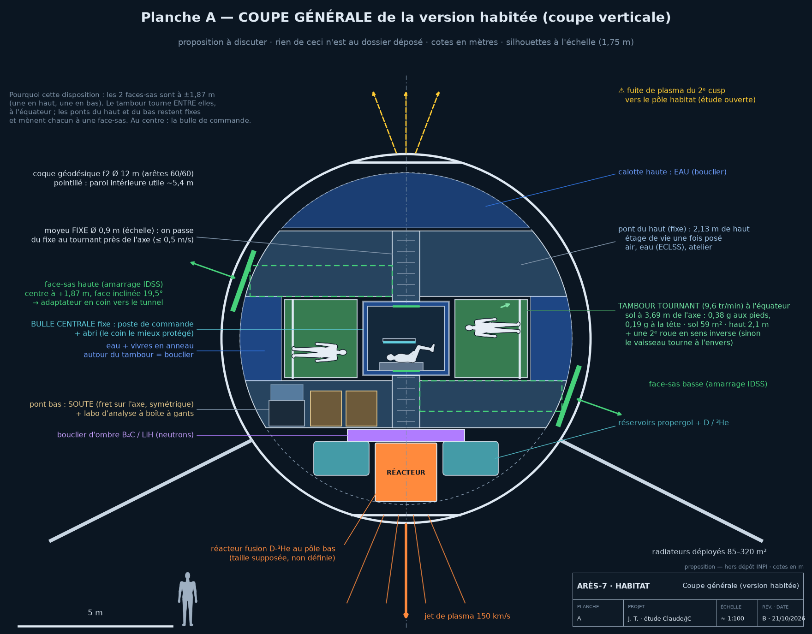
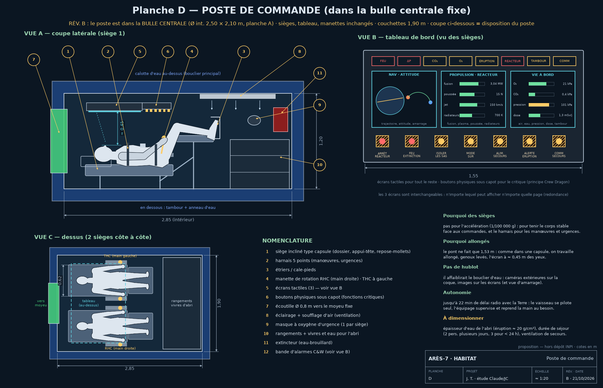
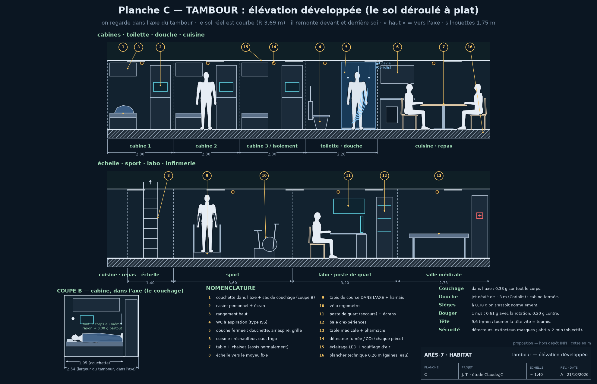
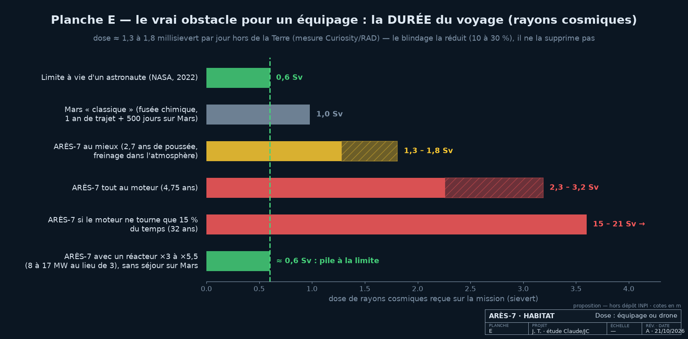

00undefined
Le nom : ARÈS = Astronef Réticulaire à Énergie Stellaire (« astronef » = vaisseau spatial ; « réticulaire » = construit en réseau — les 120 arêtes) · le « 7 » = le diamètre du tambour de vie, ~7 m. Les mots techniques sont expliqués dans le Lexique.
Chaîne directrice du design
Principe fondateur. Chaque organe cumule plusieurs rôles (biomimétisme : un os = structure + réserve minérale + hématopoïèse). C'est l'application systématique de ce principe à un véhicule spatial qui constitue l'originalité revendiquée — pas un organe isolé.
§3L'invention centrale — la partition 60/60 forcée
L'actif défendable du projet. La partition n'est pas un choix de design : c'est une conséquence topologique de la symétrie icosaédrique.
Le fait topologique 🟢 90 %
Après subdivision f2, chaque sommet d'origine de l'icosaèdre reste pentavalent (ordre 5). Il y a 12 sommets d'origine = les nœuds φ (positionnés selon φ = (1+√5)/2 ≈ 1,618).
- 12 nœuds φ × 5 arêtes = 60 arêtes radiales
- les 60 restantes (milieu→milieu) = arêtes intérieures
Vérification par les degrés : 12×5 + 30×6 = 60 + 180 = 240 = 2×120 ✓ (handshake lemma)
La coïncidence métrique = fonctionnelle
La partition fonctionnelle (radial / intérieur) coïncide avec la partition métrique (court / long) :
- 60 radiales = 60 courtes (3,28 m) → plasma-primaire
- 60 intérieures = 60 longues (3,71 m) → structure-primaire
- réseau total ≈ 419,2 m
La géométrie seule n'est pas protégeable — l'usage fonctionnel du 60/60 (structure vs canal plasma) l'est.
Topologie du circuit plasma — 🟢 topologie résolue 🟡 physique ouverte (fuite des cusps ×60, étude 4)
Le plasma doit former une boucle fermée (aller/retour) pour entretenir l'ionisation — ce n'est pas optionnel. Or un circuit fermé n'utilisant que les 60 radiales est topologiquement impossible (degré impair 5 aux nœuds φ → pas de circuit eulérien).
24 radiales aller + 60 intérieures (transit) + 36 radiales retour = réseau fermé distribué (boucle aller/retour globale, pas un parcours unique : le déséquilibre 2 sorties / 3 entrées aux 12 nœuds φ est exactement compensé aux 30 nœuds hexavalents — vannes, ext. 16 ; capacité de débit des vannes à vérifier 🟡).→ En régime permanent, les 120 arêtes circulent du plasma et émettent toutes une lumière blanche uniforme (spectre hélium).
Protégeable vs physique connue (§14)
| Élément | Protégeable ? |
|---|---|
| Exploitation fonctionnelle du 60/60 (structure ⊕ canal plasma) | ✅ OUI — actif central |
| Intégration bouclier dipolaire ⊕ éjection plasmoïde | ✅ oui, à formuler |
| Arête 6-fonctions + échange thermique contre-courant | ⊕ intégration revendiquée |
| Plasma quasi-neutre · dynamo · propulseur FRC/RMF · DFD/PFRC | ❌ physique / art antérieur connus |
§4-6Anatomie — coque, arête, circuit
De la coque géodésique à l'arête à 6 fonctions et au circuit plasma fermé.
| Coque géodésique f2 | Valeur |
|---|---|
| Type | icosaèdre géodésique fréquence-2 |
| Diamètre | Ø 12,0 m (R 6,0 m) |
| Sommets / Arêtes / Faces | 42 / 120 / 80 (Euler = 2 ✓) |
| Nœuds φ | 12 sommets pentavalents (distributeurs) |
| Arêtes | 60 radiales 3,28 m + 60 intérieures 3,71 m |
| Pôles | FACE-pôle (axe d'ordre 3) — pas vertex-pôle |
| Accès (sas) | 2 faces-sas équatoriales opposées : la porte = le panneau d'une face centrale, écoutille ≤ Ø 2,1 m — aucune arête coupée |
L'arête à 6 fonctions 🟢 cœur du Soleau
| # | Couche (cœur → extérieur) | Rôle |
|---|---|---|
| 1 | Plasma He²⁺ (Ø 1–2 mm) | transport + source lumineuse |
| 2 | Céramique YBCO (~92 K) | confine le champ + blindage magnétique |
| 3 | Fenêtre silice/saphir | laisse sortir la ligne blanche — interrompt localement l’écran YBCO (courants azimutaux coupés) → YBCO segmenté et isolé de part et d’autre, champ axial porté par les bobinages dans cette zone |
| 4 | Isolant MLI | découplage thermique |
| 5 | Bouclier B₄C | neutrons résiduels + micro-débris |
| 6 | Structure B₄C–SiC | reprise des efforts, peau externe |
Circuit plasma 24 / 60 / 36 — viewer 3D 🟡 candidat
Circuit plasma 24/60/36 — glisser pour tourner · face-pôle vérifié · rendu réel = blanc constant, couleurs = rôles (pédagogique)
La face-sas & les 10 axes — viewer 3D 🟡 proposition
Face-sas et axes d'assemblage — les 2 faces-sas (vertes) + les 2 pôles plats (bleus) · bouton « axes » = les 10 axes d'ordre 3 (1 poussée + 9 assemblage) · bouton « module » = amarrage sas-contre-sas
§7-9La physique qui force le design
Le vaisseau se lit comme une conséquence, pas un catalogue.
| Loi / symétrie | Ce qu'elle force |
|---|---|
| Symétrie icosaédrique | la coque f2 + la partition 60/60 |
| Conservation quantité de mvt | « loi des lacets » : une boucle fermée ne propulse pas → ouvrir la coque |
| Neutralité de charge (Gauss) | plasma quasi-neutre ; jet neutralisé |
| Loi d'Ampère | la dynamo : circulation ≡ champ (même phénomène) |
| Topologie du dipôle | 2 pôles / 2 cusps → réacteur au cusp sacrifié |
Lumière des arêtes 🟢 nette, sans halo 🟡 vive, couleur blanche à mesurer
Les ions α ne rayonnent pas de visible ; en se thermalisant ils reforment de l'hélium neutre excité qui se désexcite selon le spectre He I : 587,6 (jaune) · 667,8 + 706,5 (rouges) · 471,3 + 492,2 (bleues) · 501,6 nm (verte).
Le diagramme — ce que ça fait, ce que ça produit
§15Multi-module — assembler plusieurs vaisseaux
Plusieurs coques f2 accrochées ensemble par leurs champs magnétiques. Étude comparative des 7 configurations (issue du viewer ares7_configs).
| Configuration | Maintien | Poussée | Verdict |
|---|---|---|---|
| ① Paire N↔S (2 modules face-à-face) | 🟢 N attire S, très stable | 🟡 1 seul réacteur libre | le minimum viable — un module protège l'autre |
| ② Chaîne alternée | 🟢 chaque maillon attire le suivant | 🟡 seul le bout pousse | ⛔ fléchit (flambage) — souple comme un collier |
| ③ Anneau fermé | 🟢 flux en boucle, auto-stable | ⛔ nulle (loi des lacets) | une station, pas un vaisseau |
| ④ Anneau ouvert (forme C) | 🟢 même couplage, moins 1 maillon | 🟢 le flux s'échappe par la brèche | 🟢 LA forme probable — tient par magnétisme, pousse par la brèche |
| ⑤ Halbach (champ dirigé) | 🟡 forces latérales complexes | 🟡 pas de brèche naturelle | bouclier directionnel puissant, dur à maintenir |
| ⑥ Parallèle (radeau) | ⛔ les dipôles se repoussent | 🟢 poussée cohérente max | exige des attaches mécaniques — le magnétisme travaille contre soi |
| ⑦ Toroïdal | 🟡 partiel | ⛔ nulle (symétrie) | excellent confinement/bouclier, ne va nulle part |
Les 7 configurations — viewer 3D 🟢 face-pôle corrigé
Configurations magnétiques inter-modules — clique ①→⑦ pour comparer · verdicts maintien/poussée/cusps par configuration
Croissance 1 → 100 000 modules — viewer 3D 🟡 étude
Assemblage corail — curseur ou boutons ±1/±10k · croissance par faces réelles (corail) · face-pôle corrigé
⌂Habitat & équipage — peut-on embarquer des humains ?
Étude du 21-22/10/2026, hors document déposé à l'INPI (proposition). Chiffres recoupés par une 2ᵉ IA. Règle de l'auteur : rien n'est fait pour une seule raison, et rien d'inventé : chaque élément est classé 🟢🟡🔵⛔.
Habitat 3D — boutons : coque ouverte · « Scène » vie à bord / alerte éruption · « Mode » croisière / posé sur Mars (vaisseau visé seulement)
La logique : la gravité là où le corps en a besoin, l'apesanteur pour le reste
| Élément | Rôles (jamais un seul) | Statut |
|---|---|---|
| Tambour tournant (sol R 3,69 m, 9,6 tr/min) | 0,38 g pour dormir, manger, se laver, le sport, les soins | 🟢 physique · 🟡 confort |
| Anneau d'eau autour (tourne à l'envers, 3,6 tr/min) | 2ᵉ roue anti-gyroscope + bouclier + réserve d'eau + tampon thermique | 🟡 à dimensionner |
| Bulle centrale fixe (idée de l'auteur) | poste de commande + abri anti-éruption (le coin le mieux protégé) | 🟢 géométrie · 🟡 charge du moyeu |
| Pont haut fixe (2,13 m) | atelier, air/eau ; étage de vie une fois posé | 🟢 |
| Pont bas fixe = soute + labo d'analyse | fret sur l'axe (symétrique) + blindage entre réacteur et équipage ; échantillons en boîte à gants | 🟢 / 🟡 |
| Couchettes dans l'axe · douche fermée · tapis dans l'axe | gravité uniforme · l'eau part de 3 m de biais (Coriolis) · courir dans le sens de rotation changerait le poids | 🟢 vérifié |
| Déchets compactés en tuiles (NASA HMC) | moins de volume + blindage qui grandit en route | 🟢 |
| Se poser / repartir | seulement le vaisseau visé (2 MN) — jet ~110 GW au sol : Lune/Mars, pas la Terre habitée | 🔵 / ⛔ Terre |
Les planches (dossier « ingénieur »)
↓ Télécharger les 5 planches (PDF) — cotes, nomenclature, cartouche.




§10Les nombres — jeu canonique verrouillé
Propulsion plasmoïde, variante B. Liens physiques : F = ṁ·v et P = ½·ṁ·v². Recoupé : calcul interne + 2ᵉ IA + Wolfram Alpha.
| Grandeur | Formule | Valeur canonique |
|---|---|---|
| Masse plasmoïde | hypothèse | 10 µg |
| Cadence | hypothèse | 10 kHz |
| Débit massique | ṁ = mₚ·f | 0,1 g/s |
| Vitesse d'éjection | v = F/ṁ | 150 km/s |
| Poussée | F = mₚ·v·f | 15 N |
| Énergie / plasmoïde | E = ½mₚv² | 112,5 J |
| Puissance jet (faisceau) | P = ½·F·v = E·f | 1,125 MW |
| Impulsion spécifique | Isp = v/g₀ | ≈ 15 300 s |
| Consommation (duty 15 %) | ṁ × duty × an | ≈ 473 kg/an |
| Accélération (m = 150 t) | a = F/m | 1,0×10⁻⁴ m/s² |
| Temps de combustion (Δv = 10 km/s) | t = Δv/a (tir continu) | ≈ 3,2 ans |
| Temps calendaire @ duty 15 % | t_comb / duty | ≈ 21 ans |
| Fréquences de pilotage magnétique (B = 0,1 T) | cyclotron ; RMF | ions 0,77 MHz · RMF ~1–50 MHz · e⁻ 2,8 GHz |
n = P_B/kT = 2,48×10²⁰ m⁻³ (β=1, T=100 eV) suppose une pression mono-espèce. En convention plasma électrons+ions (P = n·k(Te+Ti)), n tomberait à ~1,24×10²⁰ (facteur 2). Le doc est cohérent avec son résultat — il faut juste écrire explicitement la convention, sinon c'est un futur fossile.⚠️ Ne pas confondre avec les anciens arrondis d’un premier document
| Fossile (PDF §6) | Valeur verrouillée |
|---|---|
| v = 1,54×10⁵ m/s | 1,50×10⁵ |
| Isp ≈ 15 700 s | ≈ 15 300 s |
| ṁ ≈ 0,085 g/s | 0,1 g/s |
| ~400 kg/an | ~473 kg/an |
| a = 8,67×10⁻⁵ / t = 3,66 ans (F=13 N) | 1,0×10⁻⁴ / ≈3,2 ans (F=15 N) |
ΣLe laboratoire — tous les calculs dérivables, fermés
Chaque nombre est recalculé avec les vraies constantes (mesuré, pas récité), croisé avec les études antérieures du projet. Formule + valeur + honnêteté.
A. Transit ↔ puissance 🔵 le verrou
| Objectif (Δv = 10 km/s) | Poussée F | Fusion requise | Verdict |
|---|---|---|---|
| Canon — 3,2 ans (tir) | 15 N | 3,0 MW | 🟢 tenable, au bord |
| 2 ans | 24 N | 4,8 MW | 🟡 au-delà du repère DFD |
| 1 an | 48 N | 9,6 MW | ⛔ hors DFD |
| 6 mois | 95 N | 19,3 MW | ⛔ irréaliste |
Loi : pour diviser le temps par k, il faut ×k sur la poussée → ×k sur le jet → ×k sur la fusion (à v constant). Mars A/R (Δv ≈ 15 km/s) = ×1,5 de plus. Le simulateur ci-dessous pilote cette table en direct.
B. Gravité artificielle (tambour R = 3,69 m) 🟢
| Grandeur | Valeur |
|---|---|
| ω à 9,6 tr/min | 1,005 rad/s |
| Gravité a = ω²R | 3,73 m/s² = 0,380 g (≈ Mars) |
| Vitesse jante | 3,71 m/s |
| Coriolis @ marche 1 m/s | 2,0 m/s² (~0,2 g latéral) |
| tr/min pour 1 g | 15,6 → trop haut ⇒ 0,38 g assumé |
C. Évacuation thermique — radiateurs 🟢
| Température | Flux (2 faces, ε=0,85) | Surface pour Q = 0,3–0,8 MW |
|---|---|---|
| 500 K | 6,0 kW/m² | 50–133 m² |
| 700 K | 23,1 kW/m² | 13–35 m² |
Au tir plein canon (3,04 MW fusion, η 37 %) la chaleur fatale monte à 1,92 MW → 85–320 m² (700–500 K). Masse ≈ 1–3 t : le défi est la surface à déployer autour d'un Ø12 m, pas le poids.
D. Bulle magnétique M2P2 🟡
| Rayon bulle | Poussée = P_vent·πR² | t → 10 km/s (150 t) |
|---|---|---|
| 12 km | 0,77 N | ~62 ans |
| 40 km | 8,55 N | ~5,6 ans |
| 100 km | 53,4 N | ~0,9 an |
Champ au bord requis = √(2μ₀·P_vent) = 65 nT (trivial pour du YBCO). Le verrou n'est pas le champ mais le gonflage 1/r par injection de plasma 🔵 contesté, jamais démontré. Rôle : complément + bouclier, jamais moteur principal.
E. Carburant hélium-3 🟢 calcul 🟡 filière
| Grandeur | Valeur |
|---|---|
| Consommation @ 2 MW fusion | 3,4 µg/s = 0,29 g/jour |
| Consommation @ 3,04 MW (canon) | 5,2 µg/s = 0,45 g/jour de tir |
| Mission de base Δv 10 km/s (3,2 ans de tir) | ≈ 0,5 kg |
| Mars A/R Δv 15 km/s (≈ 5 ans de tir) | ≈ 0,8 kg |
| Réserve embarquée (Mars A/R, hors marge) | ≈ 0,8 kg ≈ 16 M$ (à 20 M$/kg) — corrigé : l’ancienne réserve de 0,1 kg ne couvrait qu’environ 224 jours de tir 🟡 |
| Stock mondial terrestre | < 15 kg — 🟡 filière dédiée à bâtir |
F. Propergol — Tsiolkovski (Isp 15 300 s) 🟢
| Δv | Propergol (masse finale 150 t) |
|---|---|
| 10 km/s | 10,3 t |
| 15 km/s (Mars A/R) | 15,8 t |
G. Neutrons D-D → YBCO (durée de vie du liner) ⛔ / 🟡 selon l'écran
| Taux D-D | Fluence 6 mois @ r = 1 m | vs seuil YBCO (6×10¹⁷) |
|---|---|---|
| 10¹⁶ n/s | 1,3×10¹⁸ n/cm² | 🟡 ×2 au-dessus du seuil |
| 10¹⁷ n/s (≈ 1 % de 3 MW : 7,6×10¹⁶ — le cas réaliste) | 1,3×10¹⁹ n/cm² | ⛔ mort en quelques mois |
Terme source corrigé par l'étude 3 : ~1 % de 3 MW en neutrons D-D → 10¹⁶–10¹⁷ n/s (l'ancien 10¹⁵ était trop bas). Sans écran B₄C d'ombre suffisant, le liner YBCO meurt en mois. Pas fermé. 🔵
H. Mélange des raies He I 🟡 intensités supposées
Addition additive des 6 raies (intensités relatives 100/60/40/50/40/50 %) → R/G/B ≈ 0,95 / 1,00 / 0,51 : blanc large-bande, aucune raie ne domine (détail en Physique & lumière).
▶Simulateur de propulsion bac à essai
Bouge les curseurs et regarde le système réagir. Le mécanisme d'honnêteté : si la puissance de fusion requise dépasse celle du réacteur, le mur s'allume rouge. Le vaisseau canonique s'affiche déjà « au bord » de son réacteur.
PosteBouclier — SPE + GCR
Deux menaces, deux logiques. Sources : littérature peer-reviewed (Consensus, juin 2026).
| Point | Verdict |
|---|---|
| SPE vs GCR | deux logiques : magnétique/masse pour SPE ; GCR seulement réduite |
| Matériau par kilo | hydrogéné > métal (PE, eau, consommables) |
| Sur-blindage Al | réel au-delà de ~20–30 g/cm² (pions/neutrons secondaires) → éviter l'alu épais |
| M2P2 | top SPE, ~×2 sur GCR, conceptuel → complément |
| Budget masse | 8–15 t (eau + vivres comptent double) |
PosteCarburant — deutérium–hélium-3
Produits chargés (poussée directe), neutrons réduits — mais deux contraintes assumées.
| Point | Verdict |
|---|---|
| Cycle D-³He | retenu : D + ³He → ⁴He (3,6 MeV) + p (14,7 MeV) |
| Aneutronique ? | NON strictement — réactions parasites D-D → neutrons résiduels |
| Conséquence | justifie le B₄C + le bouclier (voir calcul G) |
| Besoin ³He | ≈ 0,8 kg/mission Mars A/R ≈ 16 M$ (voir calcul E) |
| Stock mondial | < 15 kg → filière (minage lunaire ~2027) à bâtir |
PosteCapteurs — navigation & attitude
Navigation inertielle sans GPS, attitude, note magnétosome.
| Sujet | Verdict |
|---|---|
| Nav inertielle levitée (SQUID) | ✅ perfs largement suffisantes (~10⁻¹⁰ g/√Hz) — mais cryo 4 K, PAS 77 K |
| Magnétorquer | 🟡 appoint d'attitude près des planètes seulement |
| Propulsion/orientation magnétique en croisière | 🔴 close (pousser sur le champ AMBIANT : trop faible) — ne vise PAS la tuyère magnétique, qui éjecte de la masse embarquée |
| Magnétosome | 🔵 inspiration matériau, écart d'échelle (nm vs µm) |
§11-12Bilan de viabilité — la logique en produit
La mission = produit des viabilités des modules → plafonnée par le maillon faible.
| Module | Viabilité |
|---|---|
| Géométrie & structure (60/60) | ~90 % |
| Plasma quasi-neutre & champ | ~85 % |
| Gravité artificielle (rotation) | ~85 % |
| Thermique / radiateurs | ~60 % |
| Détachement plasma | ~50 % |
| Propulsion plasmoïde (mécanisme) | ~50 % |
| Réacteur fusion nette | ~20 % ← dominant |
| MISSION GLOBALE (produit) | 🔵 ≈ 2 % (1,5–2,4 %) |
Bilan de masse
| Poste | Masse |
|---|---|
| Sous-total sec | 61–122 t |
| + marge conception (+30 %) | ≈ 79–159 t |
| Propergol (Isp 10 000–20 000, Δv 15 km/s) | 6–26 t |
| Total au départ (Mars A/R) | ≈ 85–185 t · référence du dossier : 150 t à vide + 15,8 t ≈ 166 t |
∂Le front de recherche — 6 études ouvertes
Les questions encore vivantes, par priorité physique. Chiffrées en première passe — hypothèses affichées. Elles se nourrissent l'une l'autre.
1. Détachement du plasma 🔵 le nœud
Question : le plasmoïde éjecté doit se décrocher des lignes de champ. Critère corrigé : ce n'est PAS « r_L ≥ R » (faux), mais un critère dynamique super-Alfvénique : v_A = B/√(µ₀ρ) ≈ 70 km/s → le jet à 150 km/s est déjà à Mach_A ≈ 2,1, il étire les lignes de champ → détachement plausible plus tôt que le seuil retenu auparavant. Mais le vrai nœud = les électrons : r_L(e⁻) ≈ 0,3 mm (100 eV, 0,1 T) → tournent ~3600× plus vite que les He²⁺ autour des lignes de champ (fréquence de giration) → champ ambipolaire qui rappelle le jet. Il faut un jet quasi-neutre (électrons emportés, zéro charge d'espace) — LE problème ouvert des tuyères magnétiques. Piste de résolution : le plasmoïde (FRC) est quasi-neutre par construction (il emporte ses électrons) → il s'auto-détache ; c'est pourquoi on choisit le plasmoïde plutôt qu'un faisceau d'ions nu (qui, lui, subit le rappel ambipolaire). Démontré à petite échelle (ELF/FRC), TRL bas. 🔵 plausible — plus un mur net. → lié à 4.
2. Thermique de l'arête 🟡
Question : l'YBCO (80 K) tient-il à ~1 mm du plasma chaud ? Calcul (fuite radiative, MLI ×11) : paroi 800→1200 K ⇒ cryo 0,6→2,8 kW ⇒ ~15 à 80 kW électriques. Correction : « 100 eV » (= 1,16 M K en énergie) ne fixe PAS la temp de paroi — c'est le bilan de flux de chaleur, conditionné par le confinement (le champ doit garder le plasma décollé de la paroi). Tenable < 1200 K ssi le plasma ne touche pas ; aux points d'injection (nœuds) il touche → pic local qui crève 1200 K. 🟡 Furtif partiel : coque 80 K = 0,23 W/m² (noire IR), radiateurs 500 K = 0,2–0,5 MW (visibles). → marge YBCO (étude 3).
3. Durée de vie YBCO sous neutrons 🟡
Question : combien de temps le liner survit aux neutrons D-D ? Seuils YBCO : onset ~3×10¹⁸, mort ~1–2×10¹⁹ n/cm² (bon ordre). Correction — terme source élargi : ~1 % de 3 MW en neutrons D-D → 10¹⁶–10¹⁷ n/s (le poste carburant cite JET ~10¹⁶). À 10¹⁷, fluence 6 mois @ r=1 m = 1,3×10¹⁹ → mort de l'YBCO en ~mois sur les arêtes côté pôle réacteur (pas « 4–40 ans » : c'était un source term trop bas qui enterrait le risque). 🟡→🔵 → dépend du taux D-D réel.
4. Pertes aux cusps du dipôle 🔵
Question : combien de plasma fuit par les 2 cusps ? Calcul : aire ~2·(r_L/R)² ≈ 5×10⁻⁵ (idéal wiffle-ball, borne basse — les vrais cusps fuient plus : cône de perte, β<1, gyro-rayon hybride ~0,5 mm). Le recoupement qui CASSE « 1 ≡ 4 » : cette aire (0,024 m²) à n,v canon donne un débit de fuite ṁ ≈ 6 g/s — soit ×60 le canon (0,1 g/s). Fuite stationnaire ≠ plasmoïde pulsé = deux mécanismes différents, budgets de masse incompatibles → à réconcilier avant de dire « même physique ». Et les 2 cusps ne sont pas symétriques : un seul est la tuyère (pôle réacteur) ; l'autre fuit vers le pôle habitat = perte parasite + rayonnement vers l'équipage. Résolution (piste) : les 6 g/s sont une perte parasite, PAS la poussée — le plasmoïde (0,1 g/s) est un blob pulsé séparé. Pour ramener la fuite au budget : cusp ~0,8 T (√60× le champ, faisable YBCO) ou densité au col /60. 🔵
5. Habitabilité — 9,6 tr/min tolérable ? 🟡 le gros levier
Calcul : gradient tête-pieds sur 1,8 m = 49 % (pieds 0,38 g / tête 0,19 g) ; Coriolis 0,20 g latéral ; 9,6 tr/min ≫ confort classique 2–4 tr/min (0,38 g confortable demanderait R ≈ 21 m, pas 3,69). Verdict : à Ø7,38 m l'habité est marginal → penche DRONE. → LE GROS levier : passer en drone ne largue pas que la rotation (20–35 t) mais aussi ECLSS, blindage GCR équipage, storm-shelter, vivres → ~40–70 t largués → transit nettement meilleur, ET ça rend les études 2, 3 et 5 caduques (plus d'YBCO ni d'équipage à protéger côté pôle). IP intacte : le 60/60 est agnostique à l'équipage.
6. Palier maglev 1:10 🟢 le buildable
Calcul : I_tambour ≈ 1,0×10⁵ kg·m² ; couple gyroscopique à un slew de 0,001 rad/s = 103 N·m (gérable en CMG — c'est ce qui a tué l'Architecture A rigide, ×3 au-dessus ; l'Archi B flottante le résout) ; énergie de mise en rotation = 52 kJ (triviale). Résultat : physique éprouvée (lévitation YBCO en labo) → maquette 1:10 réellement constructible (spin + mesure de raideur). 🟢 → conditionné par l'étude 5 (si drone, palier non requis).
★ Bifurcation : habité vs drone — la décision qui cascade
| Branche | Masse | Fusion / transit (Δv=10) | Conséquences |
|---|---|---|---|
| Habité (Ø7,38 m) | ~150 t | 3,04 MW / 3,2 ans au bord | confort marginal (gradient 49 %) → 0,38 g confortable exige R ≈ 21 m = un autre vaisseau |
| Drone | ~90 t | ~1,8 MW / 3,2 ans (poussée réduite à 9 N, ṁ 0,06 g/s → a = 10⁻⁴ m/s² comme le 150 t, même Δv de mission) dans l'enveloppe, ou 1,9 an @ 3 MW | supprime le problème GCR équipage ; rend 2/3/5 caducs ; palier optionnel ; IP (60/60) intacte |
AnnexePrécédents réels (déclassés / publics)
Aucune découverte magique — un ancrage de crédibilité et ses limites documentées.
| Programme | Apport | Statut |
|---|---|---|
| M2P2 (NIAC / Winglee) | bulle 10–20 km → 1–3 N pour quelques kW | 🔵 gonflage 1/r = « caractéristique innovante » ET « principale difficulté » |
| Project Orion | vaisseau nucléaire habité pris au sérieux (gouvernemental) | 🔴 voie écartée (illégale, retombées) — mais ancre le concept |
| DFD/PFRC (Princeton) | électrons 300–500 eV, plasma stable ~300 ms | 🔵 fusion PAS atteinte en 2026 ; + approvisionnement He-3 |
| AARO 2024 | — | aucune techno non-humaine : rien à récupérer |
Les formes à angles ont un pedigree
| Précédent | Le bénéfice des angles | Statut |
|---|---|---|
| Vickers Wellington (1936) | fuselage en treillis géodésique (Barnes Wallis) — volait avec des trous énormes | 🟢 a volé en escadrilles |
| F-117 Nighthawk (1981) | facettes planes = renvoi du radar (furtivité) | 🟢 opérationnel |
| Laser OMEGA (Rochester) | 60 faisceaux en symétrie icosaédrique — la même que le 60/60 | 🟢 en service (fusion) |
| Polywell (Bussard) | réacteur fusion polyédrique à cusps magnétiques | 🔵 expérimental |
| NASA SUPERball | atterrisseur-treillis anguleux (tensegrité) pour Titan | 🔵 prototype |
| CubeSats | la forme la plus répandue de l'espace = un cube — les angles sont gratuits dans le vide | 🟢 des milliers en orbite |
⌘Banque d'idées — on ne jette rien d'exploitable
Chaque idée du corpus, gardée avec son statut : pour ne jamais perdre une piste ni re-tenter une impasse. Les branches concurrentes (ex. habité/drone) restent toutes deux ouvertes. Toute idée est bonne à prendre — les neuves aussi.
🆕 Idées neuves — générées 02/07, à explorer
| Idée neuve | Angle / ce que ça multiplexe |
|---|---|
| Vectorisation de poussée par tir asymétrique des nœuds φ | propulsion ⊕ attitude, sans propulseurs séparés 🔵 |
| Cusp régénératif | recapturer la fuite parasite (pôle habitat) → alimente la bulle M2P2 : perte → ressource 🔵 |
| Neutrons → tritium | couche Li derrière le B₄C : breeding + chaleur → le problème #3 devient du carburant 🔵 |
| Carburant D-³He spin-polarisé | +~50 % de section efficace ET oriente l'émission neutronique loin des arêtes (booste le réacteur, soulage #3) 🔵 |
| TPV dans le gap de l'arête | récupérer une part des 15–80 kW de chaleur fatale en électricité 🅿️ |
| La coque 60/60 = antenne géodésique | le réseau conducteur = réseau phasé comms lointaine : la structure EST l'antenne 🅿️ |
| Métrologie par les raies He I | longueurs d'onde connues = règle optique embarquée (nav / mesure de déformation) 🅿️ |
| Tether électrodynamique — près des planètes | Δv sans propergol (Lorentz) ; planètes SEULEMENT (le mur croisière tient) 🅿️ |
| Tuyère magnétique à produits de fusion D-³He — intuition de l’auteur, 21/10/2026 | éjecter directement une partie des produits de fusion (He-4 ≈ 13 000 km/s, protons ≈ 53 000 km/s) par une tuyère magnétique → vₑ de 10³ à 10⁴ km/s (concept Direct Fusion Drive / PFRC, Princeton). Permis : l’impulsion vient de la masse embarquée (≠ « champ ambiant »). Prix : P_jet = ½·F·vₑ → à 2 MN (1,36 g) il faut ≥ 1,5 TW (~10× le canon) ; compatible 50–150 GW seulement vers ~0,14 g → Mars au plus près en ~5 jours. Le verrou « vitesse d’éjection » ramène au verrou « densité de puissance » (recoupé par une 2ᵉ IA, 21/10). 🔵 |
| Drone-porteur | essaim de sondes déployées via les faces ouvertes (radiolaires) 🅿️ |
| Plasma-aéro / MHD en atmosphère — la vision de l’auteur | ioniser l'air avec les arêtes 60/60 → enveloppe de plasma qui remodèle le choc, coupe la traînée, adoucit le bruit. « La forme est la clé » = réseau générateur de plasma, PAS profil métallique (la coque nue est un corps émoussé à grosse traînée). Mécanisme (formulation de l’auteur) : l'air est écarté/chauffé EN AMONT → poche raréfiée où le son local est plus rapide → le véhicule reste subsonique dans sa poche → AUCUNE onde de choc ne se forme (pas de bang). Lien avec le déplacement (vision de l’auteur) : le silence (ni choc ni bruit) et la façon de se déplacer sont liés — soit un seul et même mécanisme, soit deux solutions distinctes qui se complètent ; c’est peut-être la clé.Apparenté au dépôt d'énergie en amont (labo : Ajax, plasma aerodynamics). 🔵 non démontré à l'échelle véhicule ; coût énergétique de l'enveloppe = le verrou |
| Le principe de la bulle universelle — convergence de l’auteur | ne jamais toucher le milieu : fabriquer une enveloppe qui l'écarte. Eau = supercavitation (🟢 opérationnel, ×1000 sur la traînée) · air = plasma-aéro (🔵 labo) · espace = M2P2 (🔵 NIAC). Trois milieux, un concept — et ARÈS-abysses le connecte |
| Rockoon — montée par ballon (Archimède) | la seule « antigravité » réelle : ballon → 35 km (99,3 % de l'air en dessous, feu/traînée ÷150) puis allumage. 🟢 réel depuis 1952 (Van Allen). Module 2-3 t = 1 ballon NASA existant ; vaisseau entier = méga-ballon ~12 M m³ 🟡. Logistique de montée des pièces |
| Collerette IDSS dans la face-sas | standard mondial d'amarrage (passage ~0,8 m ≪ écoutille 2,1 m) → compatible Dragon/Starliner/stations commerciales (l'ISS elle-même désorbitée ~2030) 🟢 choix de conception |
| Continuité inter-modules — amarrage « arête sur arête » | la réflexion miroir fixe le plan de la face-sas → les 3 arêtes + 3 nœuds des deux faces amarrées COÏNCIDENT exactement (fait géométrique) → cette coïncidence permet des raccords arête-à-arête (plasma/courant/chaleur/données) en contact direct ; en amarrage par tunnel, la continuité passe par des lignes dans le tunnel (l’écoutille ne perce aucune arête) → les réseaux 60/60 de la grappe = UN seul système circulatoire (plasma/courant/chaleur/données), vannes hexavalentes = douanes ; un module au réacteur mort est nourri par ses voisins. Soleau ext. 17 |
| Nœuds hexavalents actifs = réseau auto-cicatrisant — trouvaille de l’auteur (« les flux se croisent ») | les 30 sommets milieux = carrefours 2R+4I où les flux se croisent ; 24 aller / 36 retour sur 30 nœuds → flux inégaux → VANNES actives : équilibrage + reroutage (réseau 4-régulier connexe après perte de toute arête, vérifié 60/60) + mécanisme vectorisation + re-ionisation. Monter en fréquence casse le 60/60 (f3=3 longueurs, f4=6) → f2 unique. Soleau ext. 16 |
| Se poser : OUI sur les petits corps | F=15 N porte 150 t si g ≤ 1e-4 : Bennu ✓, Itokawa ✓, 67P en drone ✓ (amarrage doux type Philae) = exactement les stations-service ISRU ; gros corps ✗ (Terre ×98 000, structure ×10 000) → navettes 🟢 calculé |
🟢 Exploitables — acquis ou actif
| Idée | Note |
|---|---|
| Partition 60/60 forcée (structure ⊕ canal plasma) | l'actif IP central |
| Arête à 6 fonctions (coupe multicouche) | cœur du Soleau |
| Circuit plasma fermé 24/60/36 | résout la parité de graphe |
| Face-pôle (axe d'ordre 3) | vérifié — pas vertex-pôle |
| Plasmoïde FRC quasi-neutre = auto-détachement | résout le faisceau d'ions |
| Palier maglev supra 1:10 | LE buildable (physique éprouvée) — dimensionné (v8.0) : SMB + NFAL ≈ 14 kg / 10 W continu |
| Lumière He I (raies additives) — sans halo dans le vide | mélange RGB recalculé ; couleur réelle à mesurer 🟡 |
| Gravité par rotation 0,38 g | a = ω²R vérifié |
| Gravité externe non-interférente par chute libre — principe de l’auteur | en orbite = apesanteur, marée négligeable (1,6×10⁻⁶ g) ; ne pas hover/s'arrêter dans un puits (15 N vs 1,5 MN) mais le TRAVERSER = boost (Oberth) ; gravité propre découplée (rotation). ⛔ pas d'antigravité — inutile, la chute libre suffit |
| Effet Oberth — brûler au fond du puits — intuition de l’auteur confirmée | même Δv rend ×11 d'énergie à Jupiter, ×109 en frôlant le Soleil (emprunté à la planète, conservation OK) → un puits est une RESSOURCE si on le TRAVERSE, pas un mur |
| Faces bi-fonction (réfléchissant Soleil / radiateur ombre) | rien pour une seule raison |
| Échange thermique à contre-courant (biomimétique) | garde l'YBCO froid |
| Eau + vivres = blindage double-emploi | écran hydrogéné GCR |
| Assemblage modulaire (2 arêtes + 1 nœud répétés) | monté en orbite |
🟡 À creuser
| Idée | Note |
|---|---|
| Thermique de l'arête (cryo + confinement) | étude 2 |
| Durée de vie YBCO sous neutrons | étude 3 — arête pire-cas |
| Bifurcation habité / drone | les DEUX gardées ouvertes |
| Cusp ~0,8 T pour fermer le budget de fuite | ou densité /60 |
| Concentration de flux aux 2 pôles (Halbach / miroir magnétique) — intuition de l’auteur | LE mécanisme du cusp 0,8 T : aire du col ×8 → rayon /2,8 ; concentre aussi = miroir → réduit les pertes cusp (#4), + bouclier directionnel. Prix : forces ~B² (2,5 bar à 0,8 T, gérable) |
| M2P2 = bouclier SPE (excellent) + appoint | jamais moteur principal |
| Storm-shelter eau anti-éruption | volume protégé mutualisé |
| Face-sas multifonction — manque repéré par l’auteur | entrer/sortir SANS couper d'arête : porte = panneau d'une face centrale (Ø ≤ 2,1 m, 18 candidates, 2 retenues à l'équateur) ; sas ⊕ port d'amarrage (docking §15 = sas contre sas) ⊕ cadre-raidisseur ⊕ soute ; chemin pressurisé tambour → moyeu dé-spinné → sas ; ~0,4 kg d'air/sortie |
| Multi-module anneau-C ouvert | poussée + couverture des cusps |
🔵 Spéculatives — réelles mais non prouvées
| Idée | Note |
|---|---|
| Réacteur DFD/PFRC à fusion nette | le goulot dominant (~15–25 %) |
| Détachement net du plasmoïde à l'échelle | TRL bas (ELF/FRC petite échelle) |
| Confinement / pertes aux cusps | borne basse wiffle-ball |
| Bulle M2P2 — gonflage 1/r | contesté, jamais démontré |
| Aérocapture plasma pour Mars (M2P2 4e rôle) | à quantifier |
| Vaisseau à liberté totale — la vision fondatrice, chiffrée (vitesse de météore, sans la traînée) | se pose partout + file sans bruit ni fumée = cahier des charges : poussée 2 MN (TWR 1,36), éjection plasma (sans fumée ✓ déjà le choix ARÈS-7), bulle plasma anti-feu/bruit (réduction), et LE mur : 50–150 GW embarqués dans 150 t = ×5 000–30 000 la densité de puissance du DFD. PAS interdit par la physique (contrairement au zéro-friction) — un mur de densité de puissance + thermique. La géométrie 60/60, la bulle et les sas survivent tels quels : ARÈS-7 = l'étape 1 du même vaisseau |
⛔ Enterrées — notées pour NE PAS re-tenter
| Idée morte | Pourquoi |
|---|---|
| Antigravité / warp / vol magnétique atmosphérique / décollage sol | hors physique (mur Newton) — bilan des essais : Podkletnov non répliqué (NASA : nul), lifters = vent ionique (nul dans le vide), Hutchison/Searl = artefacts, AARO 2024 = rien, ALPHA-g CERN 2023 : même l'antimatière TOMBE. Seule « antigravité » réelle observée = énergie noire (cosmologique, non pilotable 🔵). Hypothèse-cadre « admettons » : résoudrait hover/décollage/puits, mais PAS le feu atmosphérique (l'air ≠ gravité) ni les rayons cosmiques (particules chargées → c'est le bouclier magnétique M2P2 qui fait la « bulle », déjà au design). Jamais au Soleau (crédibilité). |
| Propulsion par boucle interne fermée | loi des lacets → poussée nulle |
| Faisceau d'ions nu | rappel ambipolaire → plasmoïde à la place |
| Topologie « Option A étoile » | degré impair 5 → circuit impossible |
| Vertex-pôle | contredit le §4 (4 arguments) |
| Fente nanométrique 50–200 nm | diffracte → détruit le blanc |
| Raie unique jaune / verte | fossile photométrie (le mix = blanc) |
| Coque titane · réacteur central · « oignon » | → B₄C-SiC · polaire · concentrique |
📚Sources — d'où viennent les chiffres
Les références publiques sur lesquelles s'appuie le dossier. Les calculs propres au projet sont refaits dans Les calculs.
| Sujet | Référence | Utilisé pour |
|---|---|---|
| Limite de dose des astronautes | NASA-STD-3001, vol. 1 (révision 2022) — note technique NASA OCHMO | 600 mSv sur une carrière (habitat, planche E) |
| Dose en croisière vers Mars | Zeitlin C. et al., Science 340, 1080 (2013), doi:10.1126/science.1235989 | mesures de l'instrument RAD de Curiosity pendant le voyage |
| Dose au sol de Mars | Hassler D. M. et al., Science 343 (2014), doi:10.1126/science.1244797 | 0,64 mSv/j au sol ; 1,84 mSv/j en croisière |
| Réacteur DFD / PFRC (D-³He) | Thomas S., Paluszek M., Cohen S., « Fusion-Enabled Pluto Orbiter and Lander », NASA NIAC (2017-2019) | repères du réacteur à fusion (puissance, poussée par MW) |
| Bulle magnétique M2P2 | Winglee R. M. et al., J. Geophys. Res. 105 (2000), doi:10.1029/1999JA000334 | bouclier magnétique contre les éruptions |
| Raies de l'hélium | NIST Atomic Spectra Database | longueurs d'onde He I (lumière des arêtes) |
| Déchets en tuiles de blindage | NASA Ames — Heat Melt Compactor | habitat : déchets compactés = blindage |
| Douche fermée en apesanteur | NASA, station Skylab (1973) | habitat : douche fermée à aspiration |
| Recyclage de l'eau | NASA, système de survie de l'ISS (≈ 98 % de l'eau récupérée, 2023) | habitat : bilan eau / oxygène |
| Durée record en apesanteur | V. Polyakov, 437 jours à bord de Mir (1994-1995) | habitat : limite de l'apesanteur prolongée |
| Méthode | Chiffres recalculés avec les constantes réelles, puis recoupés par plusieurs IA (relectures 2026) ; littérature sur le blindage via l'outil Consensus (juin 2026) | tout le dossier |
A–ZLexique — les mots techniques, expliqués simplement
Pour que tout le monde puisse lire le dossier. Les termes exacts sont gardés partout (les gens du domaine en ont besoin) — ici, leur traduction en français courant.
| Terme | En clair |
|---|---|
| Géodésique f2 | une sphère construite en triangles (comme un ballon de foot) obtenue en subdivisant un icosaèdre (20 faces) une fois — d'où 42 sommets, 120 arêtes, 80 faces |
| Nœud φ (phi) | l'un des 12 sommets « spéciaux » de la coque (5 arêtes au lieu de 6), placés selon le nombre d'or φ ≈ 1,618 — ce sont les distributeurs de plasma |
| Plasma | un gaz si chaud que ses atomes perdent leurs électrons — il devient conducteur et répond aux aimants (4ᵉ état de la matière : le Soleil, les néons, la foudre) |
| Plasmoïde / FRC | une « bulle » de plasma auto-organisée qui garde sa cohésion — le vaisseau en éjecte des milliers par seconde pour se propulser, comme des balles de fusil en gaz |
| YBCO / supraconducteur | une céramique qui, refroidie sous −181 °C, conduit le courant SANS résistance — parfaite pour faire des aimants puissants qui ne chauffent pas |
| Isp (impulsion spécifique) | le « rendement kilométrique » d'un moteur : combien de poussée par kilo de carburant. Plus c'est haut, plus on va loin avec peu (fusée classique ~450 s ; ARÈS-7 ~15 300 s) |
| Δv (delta-v) | le « budget vitesse » d'une mission : la somme des changements de vitesse nécessaires (aller sur Mars ≈ 15 km/s aller-retour) |
| Duty cycle | la fraction du temps où le moteur est allumé (15 % = il tire 15 % du temps, le reste il plane) |
| Cusp | les deux « entonnoirs » aux pôles d'un champ magnétique en forme de donut — les seuls endroits où le plasma peut entrer/sortir : à la fois le point faible et la tuyère |
| Dipôle | la forme de champ magnétique la plus simple (comme la Terre ou un barreau aimanté) : deux pôles, des boucles fermées entre les deux |
| M2P2 / bulle magnétique | une « voile » de champ magnétique gonflée par du plasma autour du vaisseau — dévie les radiations (bouclier) et prend un peu de poussée du vent solaire |
| D-³He (deutérium–hélium-3) | le carburant de fusion choisi : il produit surtout des particules chargées (utilisables) et peu de neutrons (nocifs) — mais l'hélium-3 est rarissime sur Terre |
| GCR / SPE | les deux radiations de l'espace : GCR = rayons cosmiques permanents (on les réduit, jamais à zéro) ; SPE = éruptions solaires ponctuelles (on s'en abrite) |
| Effet Oberth | brûler son carburant au plus profond d'un puits de gravité (au plus vite) rend plus d'énergie — plonger vers une planète et pousser au ras = boost gratuit |
| ISRU | « faire le plein sur place » : récolter eau/carburant sur les comètes, astéroïdes, lunes au lieu de tout emporter |
| TRL | échelle de maturité d'une technologie (1 = idée sur papier, 9 = ça vole en mission réelle) |
| e-Soleau | dépôt horodaté à l'INPI (~15 €) qui prouve QUE vous avez eu l'idée à une date donnée — une preuve d'antériorité, pas un brevet |
| Canon (jargon du projet) | la version officielle du projet — tout le reste est brouillon de travail |
| IDSS | le standard international d'amarrage (NASA/ESA/JAXA/Roscosmos) : un « port USB » commun à tous les vaisseaux — passage ~0,8 m |
| Rockoon | fusée lancée depuis un ballon stratosphérique (~35 km) : on monte en silence au-dessus de 99 % de l'air AVANT d'accélérer |
| Supercavitation | une bulle de gaz générée autour d'un objet sous l'eau — la traînée chute d'un facteur ~1000 (torpilles réelles à 370 km/h) |
| Icosidodécaèdre | le polyèdre formé par les 30 nœuds-milieux — son réseau supporte 3 coupures simultanées sans se déconnecter |